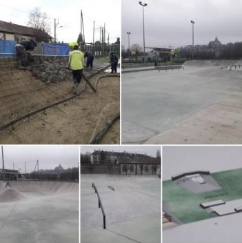
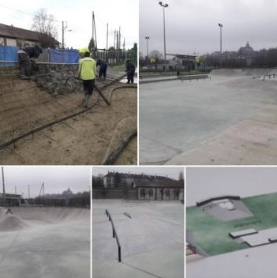
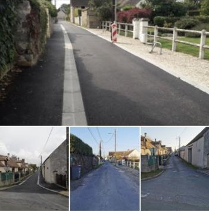
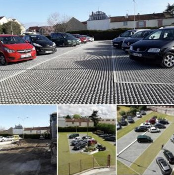
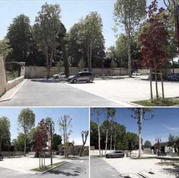

Terrassement et préparation de la structure comprenant les formes de pentes d'un Skate Parc avant le coulage du béton.

Aménagement de voirie. Bordure, caniveaux, grilles pour assainissement pluvial, enrobés, signalisation verticale et horizontale.

Création d'un parking en dalles béton alvéolées.

Création d'un parking en stabilisé et enrobés. Comprenant l'abatage des arbres existants, décaissement et préparation de la structure, assainissement, bordures, signalisation, espaces e=verts, éclairage public.